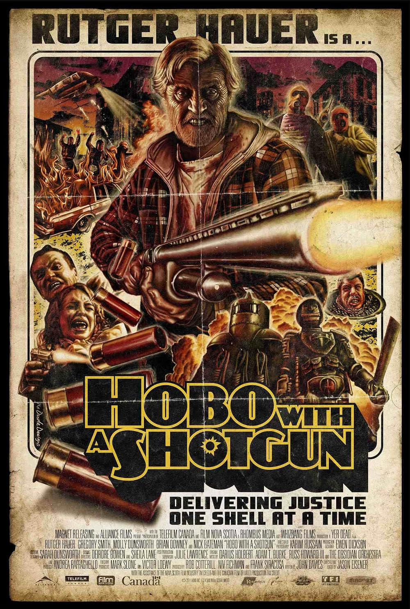
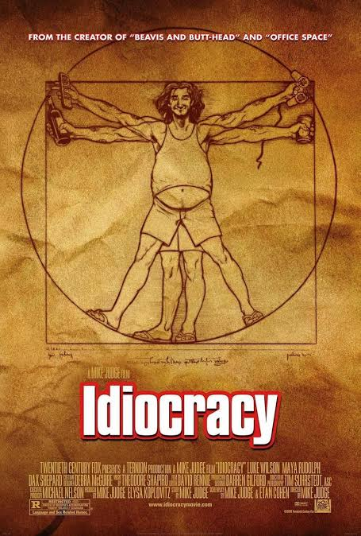
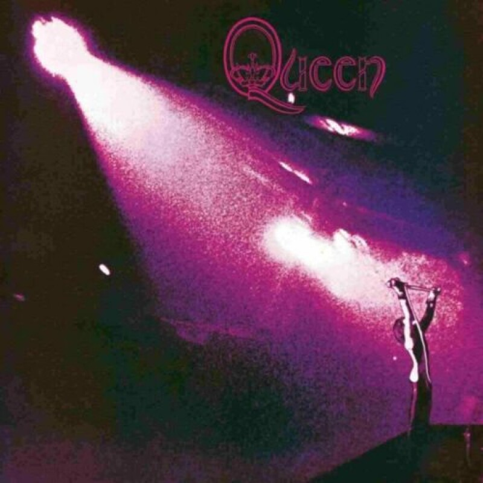
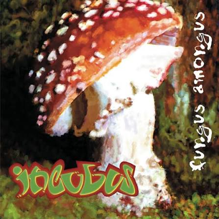
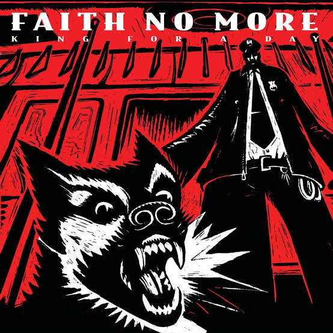

// HABILIDADES TÉCNICAS (SKILLS)
- React
- React Native
- NodeJS
- Firebase
// PELÍCULAS FAVORITAS (IMDb)


// DISCOS FAVORITOS



Hacé clic para elegir uno al azar





Hacé clic para elegir uno al azar